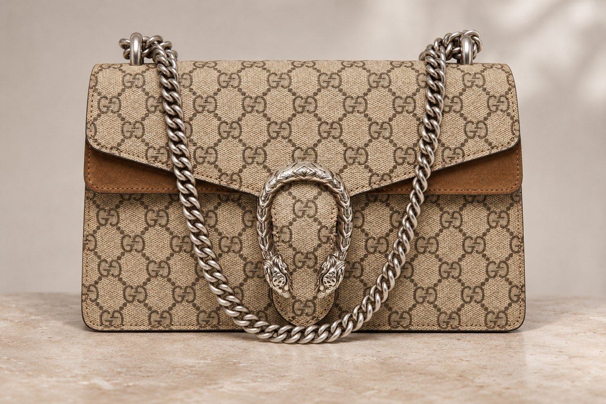
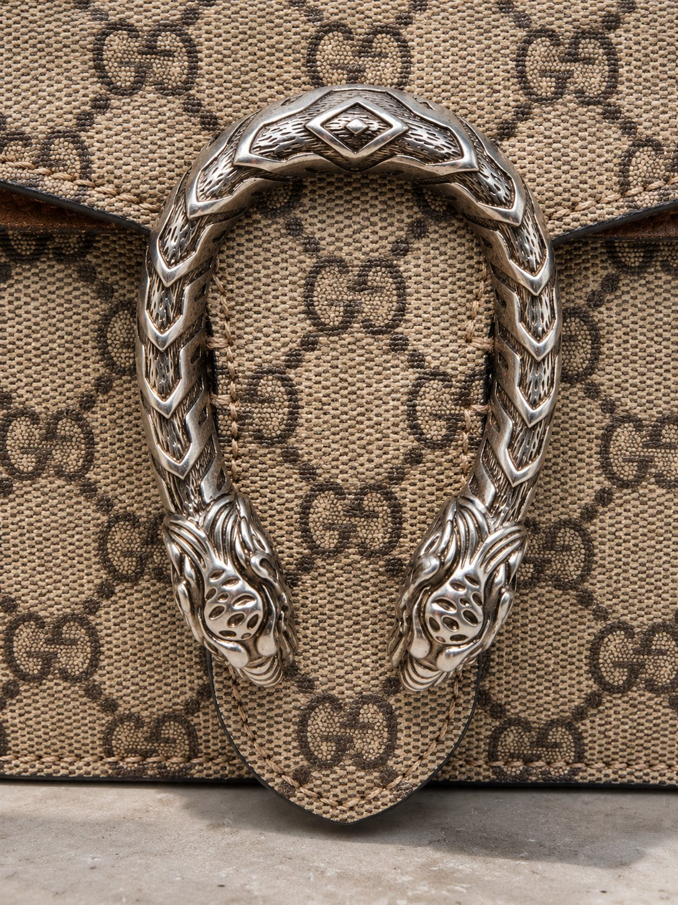
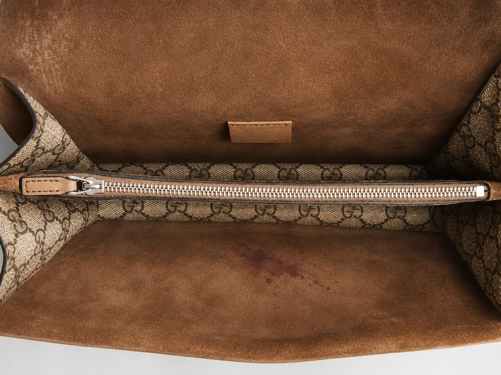
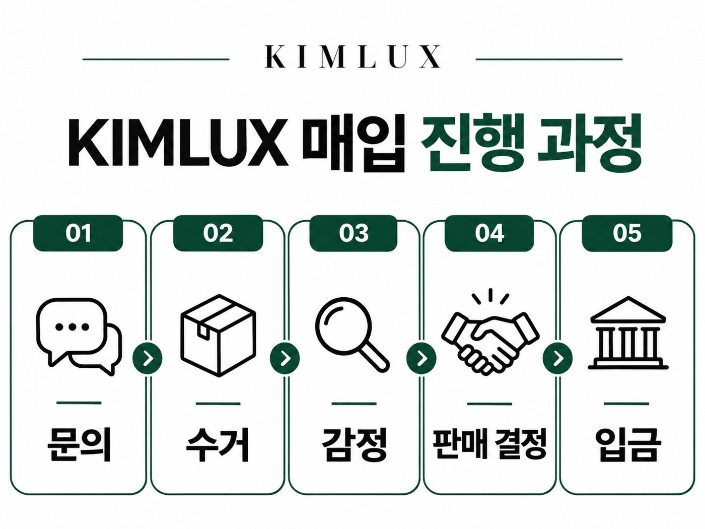

중고명품매입 구찌 디오니소스 , 60만~105만 원 도대체 얼마일까?
국내 중고명품 거래량 1위* 김럭스가 알려드리는 중고명품 매입!
가지고 있는 명품
사진만 찍으면??
김럭스가 다~ 팔아드립니다!
최근, 한 고객님께서 카톡으로 가방 사진 3장과 함께 매입 문의를 주셨어요.
가방의 정체는 바로 구찌 디오니소스 였는데요.

“이제 마지막입니다.“
금주 1주년 기념으로 술마시던 시절 물건들을 정리하는 중이신데,
와인잔 세트나 옷까지 다 버리셨는데 이 가방만 못버리고 계셨다더라고요.
아무래도 가격이 있다보니 아까워서 못 버리고, 모셔두기도 아깝잖아요.
그때 인스타에서 김럭스를 보신게 생각나서 재미삼아 가격을 확인해보셨는데, 예상 가격이 60만~105만 원이 나왔대요.
생각보다 괜찮다 싶어서 카카오톡 문의까지 하게 되신거죠.
“회식 날에만 들었고, 집에 오면 바로 더스트백에 넣어 뒀어요. 거의 새 거니까 105만 원 나오죠?”
사진을 보니 정말 상태가 좋아 보였어요.
그런데 사진은 앞면, 옆면, 버클장식 세 장뿐이었고 안쪽 사진은 없었어요.
예상 가격을 정확하게 받아 보시려면 안쪽 사진도 꼭 함께 보내 주세요.
명품은 겉보다 안쪽 상태에서 가격이 갈리는 경우가 많거든요.

저희는 안을 열어 보기 전에는 정확한 가격을 말씀드리기 어렵다고 말씀드리면서,
가방을 상자에 담아두시기만 하면 무료로 수거해드린다고 안내해 드렸어요.
디오니소스의 정체??
고객님께서는 이 가방에 대한 이야기도 함께 전해 주셨는데요.
이 가방은 5년 전에 승진 기념으로 사신 거래요.
회식이 있는 날이면 꼭 이 가방을 들고 나가실 만큼 애착 가방이었고요.
그런데 술을 끊고 처음 나간 금주 모임에서, 옆자리 분이 가방을 보더니 웃으면서 이렇게 말했대요.
"디오니소스가 무슨 신인지 아세요? 술의 신이에요!”
5년 동안 술의 신을 어깨에 메고 회식에 다니셨던 거죠.
“이젠 진짜 술과 이별을 할 시간이네요.”
이 말을 들으니 저까지 시원섭섭한 마음이 들더라고요.
두 개의 호랑이 머리, 버클 장식의 의미
이틀 뒤 가방이 도착했는데요.
도착하자마자 GLA 인증 감정사가 감정을 시작하고,
고객님께 김럭스 내 상품 화면에서 진행 상황을 바로 확인하실 수 있다고 말씀드리니
상태를 바로바로 확인할 수 있어 마음이 놓이셨다고 하더라고요.
가방은 고객님 말씀대로 겉은 정말 깨끗했어요.
더스트백은 처음 받았을 때 접힌 자국까지 그대로 였고요.

“독특한 타이거 헤드 메탈 장식의 핸드백, 숄더백, 프레셔스 미니 백. 제우스가 보낸 호랑이를 타고 티그리스강을 건넜다는 그리스 신화 속 디오니서스를 기념합니다.”
출처: 구찌 공식 홈페이지 디오니소스 컬렉션 원문 보기
구찌 디오니소스는 앞면 버클장식이 포인트인거 다들 아시죠?
이 컬렉션은 알레산드로 미켈레가 구찌를 맡은 2015년에 처음 나온 가방이기도 하고요.
받아본 가방을 살펴보니 버클 뿐만 아니라 손잡이와 모서리도 흠집이 거의 없어 새거 같았어요.
안쪽 태그 폰트와 공정 디테일까지 살펴서 정품인 것도 확인했고요.
여기까지만 보면 고객님 말씀처럼 105만 원에 가까웠어요.
여기까지 봐야 진짜 감정

그런데 가방을 열어 보니 안감에 붉은 얼룩이 있었어요.
심지어 손바닥 반만 한 와인 자국이었는데요.
이렇게 되면 105만원은 물건너 간 셈이죠.
김럭스는 중고 가방 상태를 꼼꼼하게 정밀 감정 후에 N, S, SA, A 네 등급으로 나누는데요.
오늘 소개한 일화처럼 사용한 흔적이 눈에 보이면 A등급이에요.
겉이 아무리 깨끗해도 안쪽에 얼룩이 있으면 A가 될 수 있어요.
그래서 최종 가격은???
감정 결과는 70만원 이였어요.
"얼룩 하나로 그렇게 차이가 나요?"
당연히 고객님은 이해하기 어렵다는 입장이셨는데요.
가방을 열 때마다 바로 보이는 얼룩이라 어쩔 수 없다고 말씀드렸어요.
얼룩만 없었다면 105만 원 받을 수도 있었는데 저희도 아쉽더라고요.
고객님은 잠깐 말이 없으시다가 웃는 이모티콘을 보내셨어요.
혹시 안 팔면 비용이 드냐고도 물어보셨는데,
안 파셔도 수거·반송 배송비와 감정 비용은 받지 않고 가방은 저희가 택배로 다시 보내 드린다고 말씀드리니
고객님은 하루 정도 고민하시고 판매를 결정하셨어요.

사실 다른 중고거래 사이트에 직접 올리면 몇만 원은 더 받으실 수도 있었을 거예요.
그런데 사진 찍어 올리고, 가격 흥정하고, 정품 맞냐는 질문에 하나하나 답하는 과정이 번거로우셨대요.
몇만 원 더 받자고 그 과정을 겪으며 스트레스 받기는 싫으셨다고요.
판매하신 다는 말씀을 듣자마자 등록해 두신 계좌로 입금해 드렸어요.
입금까지 날짜를 세어보니 카톡으로 처음 문의하신 날부터 나흘 정도 걸렸네요.
집안에 명품이 있으신가요?
그렇다면 재미삼아 알아보는 것도 추천드려요!
혹시 알아요? 비싼 값에 팔릴지?
* 국내 중고명품 거래량 1위: 집계 기준·기간 표기 예정. 60만~105만 원은 김럭스 홈페이지 판매하기 화면의 같은 모델 예상 범위. 고객 사례·최종 금액·기간은 예시이며 발행 전 담당자님 확인.